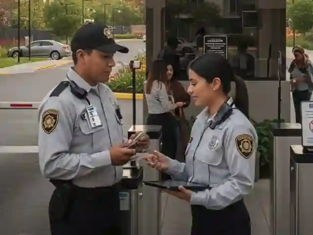
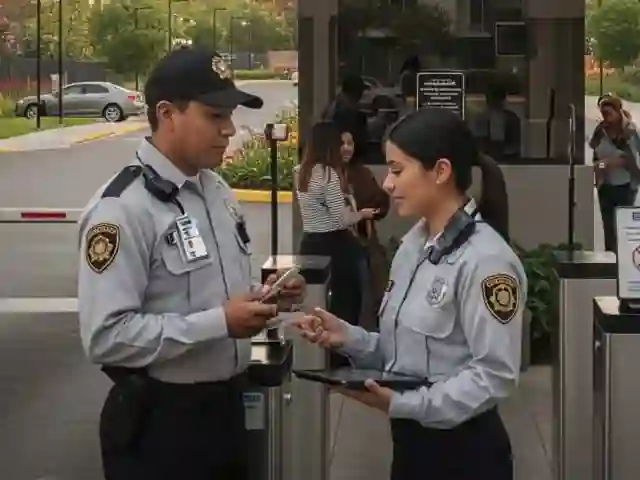

En Este Articulo
Los condominios de alto valor en zonas exclusivas de CDMX no solo representan inversiones patrimoniales significativas, sino concentraciones de familias de alto perfil que se convierten en objetivos atractivos para la delincuencia organizada. Esta guia revela los 7 componentes esenciales de seguridad integral que combinan personal certificado SSC, tecnologia CCTV avanzada y protocolos preventivos probados en residenciales premium.
Por Que los Condominios de Lujo Requieren Seguridad Especializada
Los desarrollos residenciales en zonas premium de CDMX —Polanco, Santa Fe, Bosques de las Lomas, Interlomas, Lomas de Chapultepec— concentran familias con alto poder adquisitivo que enfrentan amenazas de seguridad especificas y diferenciadas de los residenciales estandar.
Incidentes con Informacion Privilegiada
De los delitos en zonas residenciales premium involucran informacion proporcionada por personal con acceso al condominio, segun analisis de patrones delictivos en CDMX.
Amenazas Especificas para Condominios Premium
- Robo con violencia dirigido: Residentes identificados previamente por su perfil economico
- Secuestro express: Principalmente en puntos de acceso vehicular
- Extorsion telefonica: Con informacion privilegiada obtenida mediante vigilancia previa
- Robo hormiga: Facilitado por personal domestico no verificado
- Fraude por suplantacion: Mediante simulacion de proveedores o visitantes legitimos
Error Critico: Seguridad Reactiva
Implementar seguridad unicamente despues de un incidente grave incrementa significativamente los costos y reduce la efectividad. La prevencion profesional es considerablemente mas eficiente que la reaccion ante crisis.
Los 7 Componentes de Seguridad Integral para Condominios Premium
1. Guardias Certificados SSC con Perfil Premium
No cualquier guardia es apto para condominios de lujo. El personal asignado a residenciales premium debe cumplir requisitos especificos que van mas alla de la certificacion basica obligatoria.
- Certificacion SSC vigente: Requisito legal obligatorio en CDMX
- Capacitacion en atencion premium: Trato cortes, protocolos de discrecion, manejo profesional de situaciones
- Verificacion exhaustiva de antecedentes: Historial laboral, antecedentes penales, estudios socioeconomicos
- Examenes toxicologicos periodicos: No solo al ingreso, sino de manera continua
- Evaluaciones psicometricas especializadas: Deteccion de perfiles conflictivos o poco confiables
Consejo Profesional
Solicita siempre al proveedor de seguridad los registros de capacitacion continua de los guardias asignados. Un guardia certificado hace mas de un año sin actualizacion representa un riesgo operativo significativo.
2. Control de Accesos Multicapa
Los condominios de lujo requieren sistemas de control de accesos que combinen tecnologia avanzada y verificacion humana profesional en multiples capas de proteccion.
Capa 1: Acceso Vehicular
- Reconocimiento automatico de placas (ANPR) para residentes registrados
- Registro fotografico de todos los vehiculos visitantes
- Verificacion telefonica obligatoria con residente antes de autorizar acceso
- Control de proveedores mediante lista blanca preautorizada
Capa 2: Acceso Peatonal
- Credenciales biometricas para residentes (huella dactilar o reconocimiento facial)
- Registro de visitantes con captura de identificacion oficial
- Distintivos temporales para personal domestico y proveedores
- Bitacora digital con timestamps para evidencia legal
3. CCTV con Monitoreo Profesional
Las camaras por si solas no previenen delitos: deben estar respaldadas por monitoreo activo las 24 horas. Un sistema CCTV efectivo para condominios premium incluye:
- Cobertura perimetral completa: Bardas, accesos, estacionamientos, areas comunes
- Camaras IP de alta resolucion: Vision nocturna y grabacion continua
- Respaldo en nube cifrado: Retencion minima de 30 dias para evidencia legal
- Monitoreo remoto profesional: Centro de control con personal capacitado 24/7
- Alertas automaticas: Deteccion de movimiento en horarios restringidos
Importante: Retencion de Video
La legislacion mexicana requiere que las grabaciones de seguridad se conserven un minimo de 30 dias. Verifica que tu sistema de CCTV cumpla con este requisito para validez legal de evidencias.
4. Patrullaje Vehicular Preventivo
Para condominios con extensiones considerables o desarrollos horizontales tipo cluster, el patrullaje movil complementa la vigilancia fija de manera esencial.
- Rondines programados e impredecibles en perimetros y calles internas
- Vehiculos equipados con GPS para rastreo en tiempo real
- Respuesta inmediata ante alertas del sistema CCTV o reportes de residentes
- Coordinacion establecida con autoridades locales para respuesta ante emergencias
5. Protocolos de Emergencia Documentados
Los condominios premium requieren protocolos de emergencia documentados, socializados y ensayados periodicamente con todo el personal de seguridad.
- Plan de respuesta ante intrusion: Secuencia de acciones, puntos de contacto, coordinacion con autoridades
- Protocolos medicos de emergencia: Primeros auxilios, contacto con servicios medicos, rutas de evacuacion
- Gestion de incendios: Brigadas capacitadas, equipos certificados, simulacros programados
- Evacuacion organizada: Rutas señalizadas, puntos de reunion, listas de verificacion de residentes
6. Gestion de Personal Domestico y Proveedores
Una de las vulnerabilidades mas criticas en condominios de lujo es el personal externo: empleadas domesticas, jardineros, repartidores, personal de mantenimiento.
- Registro obligatorio: Personal domestico con identificacion oficial y fotografia
- Horarios autorizados: Restriccion de acceso fuera de horarios establecidos
- Verificacion de antecedentes disponible: Servicio opcional para residentes
- Protocolo de proveedores: Solo ingresan empresas preautorizadas o con verificacion telefonica
- Inspeccion discreta de salidas: Prevencion de robo hormiga
7. Capacitacion Continua y Actualizacion
La seguridad no es estatica. El personal asignado a condominios premium debe recibir actualizacion constante mediante:
- Capacitacion periodica en nuevos protocolos y amenazas emergentes
- Simulacros de emergencia con participacion de residentes
- Actualizacion tecnologica en nuevos sistemas CCTV y control de accesos
- Cumplimiento normativo continuo con regulaciones SSC CDMX
Comparativa: Seguridad Basica vs. Seguridad Integral Premium
| Componente | Seguridad Basica | Seguridad Integral Premium |
|---|---|---|
| Personal | Guardias sin certificacion o vencida | Guardias certificados SSC con capacitacion premium |
| Control de Accesos | Bitacora manual en papel | Sistema multicapa con biometria y ANPR |
| CCTV | Camaras sin monitoreo activo | Monitoreo profesional 24/7 con respaldo en nube |
| Patrullaje | Rondines fijos predecibles | Patrullaje vehicular con GPS y rutas variables |
| Emergencias | Sin protocolos documentados | Protocolos completos con simulacros periodicos |
| Personal Externo | Sin control de domesticos | Registro, verificacion y control de horarios |
| Actualizacion | Sin capacitacion continua | Capacitacion periodica y actualizacion normativa |
Zonas Premium de CDMX que Requieren Seguridad Especializada
Cada zona residencial premium presenta caracteristicas y riesgos especificos que requieren adaptaciones en los protocolos de seguridad.
Polanco y Nuevo Polanco
Desarrollos verticales de ultra lujo con residentes de alto perfil corporativo y diplomatico. Requieren discrecion absoluta, control de accesos multicapa y coordinacion con seguridad privada de empresas multinacionales cercanas.
Santa Fe
Torres residenciales con amenities premium y poblacion flotante considerable (visitantes corporativos, huespedes temporales). Control de accesos vehicular critico debido a congestion vial y riesgo elevado de secuestro express en vialidades de acceso.
Interlomas y Bosque Real
Condominios horizontales tipo cluster con perimetros extensos. Patrullaje vehicular esencial, videovigilancia perimetral reforzada y control riguroso de personal domestico debido a alta rotacion caracteristica de la zona.
Bosques de las Lomas y Lomas de Chapultepec
Residenciales con familias de ultra alto patrimonio. Protocolos especiales de prevencion ante extorsion, verificacion exhaustiva de proveedores y personal domestico, disponibilidad de proteccion ejecutiva para residentes que lo requieran.
Proceso de Implementacion de Seguridad Integral
Metodologia Profesional en 5 Fases
Analisis de Riesgos
Evaluacion integral del condominio: perimetro, accesos, areas comunes, vulnerabilidades identificadas y perfil de residentes.
Diseno de Protocolos
Elaboracion de protocolos personalizados para control de accesos, emergencias, gestion de personal externo y coordinacion con autoridades.
Seleccion de Personal
Asignacion de guardias certificados SSC con perfil compatible, verificacion de antecedentes y capacitacion especifica para el condominio.
Integracion Tecnologica
Implementacion o integracion con sistemas CCTV, control de accesos y comunicaciones existentes. Configuracion de monitoreo remoto.
Operacion y Mejora Continua
Inicio de operaciones con supervision constante, auditorias de calidad periodicas y ajuste de protocolos segun incidencias.
Solicita tu Evaluacion Gratuita Hoy
Nuestros especialistas identifican vulnerabilidades criticas en tu condominio y te entregan un plan de proteccion personalizado. Sin compromiso.
Protege a tu Familia AhoraElementos de Seguridad Integral para Condominios

 


Conclusion
Los condominios de lujo en CDMX concentran patrimonio significativo y familias de alto perfil que requieren proteccion especializada. La seguridad efectiva no se logra solo con guardias en caseta: requiere integracion profesional de personal certificado, tecnologia avanzada y protocolos preventivos adaptados a las caracteristicas especificas de cada desarrollo.
La seguridad profesional no es un gasto: es una inversion preventiva que protege lo mas valioso. No arriesgues la tranquilidad de tu familia ni el patrimonio de tu condominio con soluciones improvisadas.
Preguntas Frecuentes
Los guardias de seguridad en CDMX deben contar obligatoriamente con la certificacion SSC (Secretaria de Seguridad Ciudadana) vigente. Para condominios de lujo se recomienda capacitacion adicional en atencion al cliente premium, protocolos de emergencia, primeros auxilios y manejo de tecnologia CCTV. Verifica siempre que la empresa de seguridad cuente con permiso SSC vigente y pueda acreditar la certificacion de cada elemento asignado.
Paradojicamente, las zonas de mayor valor inmobiliario son objetivos frecuentes de delincuencia organizada precisamente por la concentracion de familias de alto patrimonio. Polanco, Santa Fe, Interlomas, Bosques de las Lomas y Lomas de Chapultepec requieren seguridad especializada con protocolos preventivos robustos, control de accesos multicapa y coordinacion con autoridades locales.
Un sistema de seguridad integral incluye 7 componentes esenciales: (1) Guardias certificados SSC con perfil premium, (2) Control de accesos multicapa (vehicular y peatonal), (3) Videovigilancia CCTV con monitoreo profesional 24/7, (4) Patrullaje vehicular preventivo, (5) Protocolos de emergencia documentados, (6) Gestion de personal domestico y proveedores, y (7) Capacitacion continua y actualizacion normativa.
El personal domestico sin verificacion representa una vulnerabilidad critica por multiples razones: puede facilitar robo hormiga de objetos de valor, proporcionar informacion sobre rutinas y patrimonio a delincuentes externos, o ser victima de extorsion para obtener acceso. La verificacion de antecedentes, registro obligatorio con identificacion oficial, control de horarios y supervision de entradas y salidas son medidas preventivas esenciales.
La seguridad basica tipicamente incluye guardias en caseta sin certificacion verificada, bitacoras manuales y camaras sin monitoreo activo. La seguridad integral profesional incorpora personal certificado SSC con capacitacion premium, control de accesos multicapa con tecnologia biometrica, CCTV con monitoreo remoto 24/7, patrullaje vehicular con GPS, protocolos de emergencia documentados, gestion de personal externo y capacitacion continua.
Protege a tu Familia y Patrimonio Hoy Mismo
Guardias 100% certificados SSC, monitoreo CCTV 24/7 y protocolos de elite adaptados a tu condominio. Cada dia sin proteccion profesional es un riesgo innecesario para quienes mas amas. Evaluacion gratuita y sin compromiso.
Solicita tu Evaluacion Gratuita Ahora